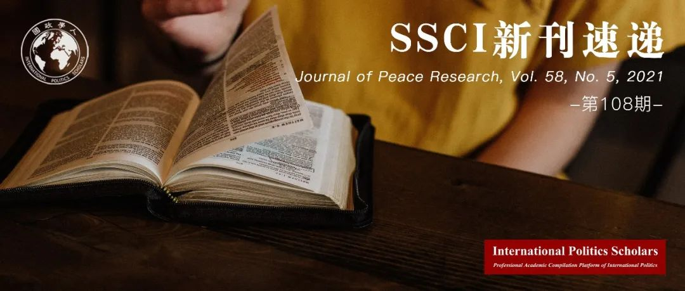

收录于合集
#Journal of Peace Research 1 个
#新刊速递 123 个

期刊简介
《和平研究杂志》（Journal of Peace Research）是一份关于全球冲突和维护和平的跨学科双月刊，由奥斯陆和平研究所负责。该期刊除了涉及和平相关的概念以外，还会关注暴力的根源以及冲突的解决方法。根据Journal Citation Reports的数据，2021年该期刊的影响因子为4.054。

本期目录
1.国内冲突中暴力的时空演化：基于新事件数据集的冲突扩散的微观分析
The geo-temporal evolution of violence in civil conflicts: A micro analysis of conflict diffusion on a new event data set
2.非洲冲突中的攻击平民行为：一场空间传播的糟糕的行为体博弈
Civilian targeting in African conflicts: A poor actor’s game that spreads through space
3.内战期间领导人的经历和叛乱如何影响军队招募
How leaders’ experiences and rebellion shape military recruitment during civil war
4.科特迪瓦的地方精英、公民抵抗和对反叛统治的反应
Local elites, civil resistance, and the responsiveness of rebel governance in Cote d’Ivoire
5.非暴力动员的政治：运动、竞争和社会运动资源
The politics of nonviolent mobilization: Campaigns, competition, and social movement resources
6.重新制定简·丁伯根关于福利和安全的规范愿景
Reformulating Jan Tinbergen’s normative vision on welfare and security
7.象征性胜利和战略风险
Symbolic victories and strategic risk
8.经济治理与谋杀：基于1990年至2017年的一些理论与实证
Economic governance and homicide: Some theory and empirics, 1990-2017
9.关于镇压的竞争性叙事：来自埃及的实证证据
Contesting narratives of repression: Experimental evidence from Sisi’s Egypt
10.家的感觉：跨国身份对对外态度的影响
Feels like home: Effect of transnational identities on attitudes towards foreign countries
11.单边分裂、国际承认与大国争夺
Unilateral secession, international recognition, and great power contestation
12.世贸组织是否加剧了国际冲突？
Does the WTO exacerbate international conflict?
13.国际贸易与网络冲突：分解贸易对国家支持的网络攻击的影响
International trade and cyber conflict: Decomposing the effect of trade on state-sponsored cyber attacks
14.关于失踪死者的问题
The problem of the missing dead
01
国内冲突中暴力的时空演化：基于新事件数据集的冲突扩散的微观分析
题目： The geo-temporal evolution of violence in civil conflicts: A micro analysis of conflict diffusion on a new event data set
作者： Arzu Kibris，华威大学政治科学与冲突研究副教授。
摘要： 现有关于（冲突）扩散的研究没有考虑到冲突事件对交战双方的作战能力可能产生的能力丧失的影响，以及这些影响如何决定冲突的演变。本文假设，在国家方面有损失的事件很有可能与时空的溢出效应有关，而叛乱分子有损失的事件则不太可能与他们附近地区的未来混乱有关。为了验证该论点，本文首先介绍了一个关于土耳其长期国内冲突的新的、全面和详细的事件数据集。土耳其—库尔德工人党冲突事件数据集（TPCONED）包括土耳其和反叛组织库尔德工人党之间自1984年开始的武装冲突中致命事件的确切日期和县级地点，以及战斗人员伤亡的详细信息。本文采用了一个人口分割的双变量Probit模型，该模型使本文能够通过承认、估计和核算不同地点的基本冲突倾向性的变化，作为影响事件扩散的潜在变量，全面地描述冲突的地理时间演变。统计分析的结果为本文的假设提供了支持，并揭示了事件在空间和时间上如何演变取决于战斗双方所遭受的损害。本文通过对数据进行广义精确匹配（CEM），在一个匹配的样本上证明了这些结果的稳健性。
Existing works on diffusion fail to account for the incapacitating effects conflict events may have on the operational capability of the combatant sides and how these effects may determine the evolution of a conflict. I hypothesize that it is those events with losses on the state side that are likely to be associated with geo-temporal spillovers, whereas events with insurgency losses are less likely to be associated with future mayhem in their vicinity. To test my arguments, I first introduce a new, comprehensive and detailed event dataset on the long-running civil conflict in Turkey. The Turkish State-PKK Conflict Event Database (TPCONED) includes the exact date and county-level location for the fatal events of the armed conflict between the Turkish state and the rebel organization PKK since its very beginning in 1984 with detailed information on combatant casualties. I then employ a split population bi- probit model which allows me to comprehensively depict the geotemporal evolution of the conflict by acknowledging, estimating and accounting for the variation in the underlying conflict proneness across locations as a latent variable that shapes the diffusion of events. The results of the statistical analyses offer support for my hypotheses and reveal that how events evolve over space and time is conditioned by the damages suffered by the combatant sides. I demonstrate the robustness of these results on a matched sample I obtain by employing the Coarsened Exact Matching (CEM) on the data.
02
非洲冲突中的攻击平民行为：一场空间传播的糟糕的行为体博弈
题目： W Civilian targeting in African conflicts: A poor actor’s game that spreads through space
作者： Piotr Lis，考文垂大学经济学高级讲师；Michael Spagat，伦敦皇家霍洛威大学经济学教授；Uih Ran Lee，苏塞克斯大学经济学系。
摘要： 武装冲突行为体经常以平民为攻击目标。因此，更好地了解这种行为可以帮助减少此种行为。我们使用平民攻击指数（CTI）与大量的地理参照数据，对非洲冲突行为体攻击平民行为的时空和经济动态进行调查。调查主要产生了两个观点。首先，非洲非国家冲突行为体攻击平民的行为受到其他近邻行为体行为的强烈影响。值得一提的是，非国家行为体往往在附近的非国家行为体采取行动后增加其攻击平民行为。有两种可能机制以解释这种空间溢出效应：模仿和报复。第二，经济活动与攻击平民行为之间存在着负向关系，这种关系既适用于国家行为体，也适用于非国家行为体。此外，非国家行为体的平民攻击指数往往随着人口密度、冲突活动的地理分布和冲突持续时间的增加而增加。国家行为体的平均平民攻击指数高于非国家行为体，但在长期冲突中，这两种行为体之间的差距趋于缩小。
Armed conflict actors frequently target civilian populations. Thus, an improved understanding of such behaviour could pave the way to reducing it. We use the Civilian Targeting Index (CTI) and a broad array of geo-referenced data to investigate the spatio-temporal and economic dynamics of civilian targeting by conflict actors in Africa. Two main insights are generated. First, the civilian targeting behaviour of African non-state conflict actors is strongly influenced by the behaviour of other proximate actors. In particular, non-state actors tend to increase their civilian targeting after nearby non-state actors have done so. Possible mechanisms to explain such spatial spillovers include emulation and retaliation. Second, a negative relationship between economic activity and civilian targeting exists and applies to both state and non-state actors. In addition, CTIs of non-state actors tend to increase with population density, the geographical spread of their conflict activity and conflict duration. State actors have higher average CTIs than non-state actors do, but the gap between the two actor types tends to close during long-duration conflicts.
03
内战期间，领导人的经历和叛乱如何影响军队招募
题目： How leaders’ experiences and rebellion shape military recruitment during civil war
作者 ： Suparna Chaudhry，刘易斯-克拉克学院大学助理教授；Sabrina Karim，康奈尔大学助理教授；Matt K. Scroggs，克里斯托弗新港大学客座助理教授。
摘要： 在战争期间使用强制征兵策略会对军事效力产生不利影响。考虑到这些成本，国家领导人在内战期间在何种情况下会强制征兵？本文发现，在1980年至2009年期间，国家在内战期间改变了140次征兵政策——其中一半是朝着胁迫性征兵的方向。由于结构主义的解释侧重于那些随着时间的推移或多或少保持不变的因素，它们无法解释这些变化的频率。相反，本文关注的是个人层面的因素，并认为领导人作为风险承担者的倾向决定了他们在内战期间使用武力解决集体行动困境的信念。此外，冲突背景对领导人征兵政策也产生影响——当反叛组织进行胁迫性招募时，领导人也会觉得使用这种策略更加合理。通过使用LEAD数据集和招募数据，研究发现容忍风险的领导人，包括曾有安全部门工作经历、有应对反叛或反革命经历的领导人，更可能使用武力来增加招募。虽然本文理论上认为这种影响可能会被战斗经验所缓解，但证据是混合的。最后，本文发现，反叛者使用强迫招募的方式使得国家领导人不太可能采取自愿入伍的政策。
The use of forced recruitment strategies during war can adversely affect military effectiveness and human rights. Given these costs, under what conditions do state leaders adopt coercive recruitment during civil wars? We find that between 1980 and 2009, states changed their recruitment practices 140 times during civil wars – half of which were towards coercive recruitment. Since structuralist explanations focus on factors that remain more or less constant over time, they cannot explain the frequency of these changes. Instead, we focus on individual-level factors and argue that leaders’ dispositions as risk-takers determine their beliefs about using force to solve collective action dilemmas during civil wars. Further, conflict context matters for leaders’ recruitment decisions – when rebel groups engage in coercive recruitment, leaders may also feel more justified in using such strategies. Using the LEAD Dataset and data on recruitment, we find that risk- tolerant leaders, including those who have had careers in the security sector, as well as those who have prior experience as a rebel or revolutionary leader, are more likely to use force to increase recruitment. While we theorize that this effect may be mitigated by combat experience, the evidence is mixed. Lastly, we find that rebels’ use of forced recruitment makes state leaders less likely to use voluntary recruitment.
04
科特迪瓦的地方精英、公民抵抗和对反叛统治的反应
题目： Local elites, civil resistance, and the responsiveness of rebel governance in Cote d’Ivoire
作者： Sebastian van Baalen，乌普萨拉大学和平与冲突研究系助理教授。
摘要： 为什么反叛统治在某些领域比在其他领域更敏感？近年来，学者们开始研究反叛统治的决定因素。但研究较少关注解释对反叛统治的反应的差异，即叛军在治理中征求和采取平民偏好的程度。本文试图通过研究对反叛反应的局部变化来解决这一差距。作者认为，反叛者的反应能力取决于当地精英是否控制了侍从主义（clientelist）网络并能够动员当地民众。强大的公民网络意味着地方精英对资源的控制和政府权威的结构。同时，这样的网络也塑造了当地精英动员民间力量抵抗叛军的能力，塑造了他们在叛军治理的谈判者讨价还价的能力。利用8个月实地调查收集的访谈和档案数据，以及现有的调查数据，该研究通过对科特迪瓦新力量（Forces Nouvelles）控制的四个地区进行系统比较，检验了这一论点。分析表明，地方精英对公民网络的控制强度塑造了反叛者的反应能力。此外，它为理论化公民抵抗机制提供了支持，并表明民众与反叛者之间的种族政治联系进一步加强了这种机制。这些发现与有关反叛治理和公民抵抗研究的最新研究相呼应，研究结果为有关如何在内战中保护平民的政策辩论提供了信息。
Why is rebel governance more responsive in some areas than in others? In recent years, scholars have started to examine the determinants of rebel governance. Less attention has been given to explaining variation in the responsiveness of rebel governance, that is, the degree to which rebels are soliciting and acting upon civilian preferences in their governance. This article seeks to address this gap by studying local variation in rebel responsiveness. I argue that rebel responsiveness is a function of whether local elites control clientelist networks that allow them to mobilize local citizens. Strong clientelist networks are characterized by local elite control over resources and embeddedness in local authority structures. In turn, such networks shape local elites’ capacity for mobilizing support for, or civil resistance against, the rebels, and hence their bargaining power in negotiations over rebel governance. Drawing on unique interview and archival data collected during eight months of fieldwork, as well as existing survey data, the study tests the argument through a systematic comparison of four areas held by the Forces Nouvelles in Cote d’Ivoire. The analysis indicates that the strength of local elites’ clientelist networks shapes rebel responsiveness. Moreover, it provides support for the theorized civil resistance mechanism, and shows that this mechanism is further enhanced by ethnopolitical ties between civilians and rebels. These findings speak to the burgeoning literature on rebel governance and to research on civil resistance. In addition, the results inform policy debates on how to protect civilians in civil war.
05
非暴力动员的政治：运动、竞争和社会运动资源
题目： The politics of nonviolent mobilization: Campaigns, competition, and social movement resources
作者： Pearce Edwards，卡耐基·梅隆大学政治与战略研究院博士后研究员，埃默里大学政治科学系博士。
摘要： 非暴力抵抗被认为是实现政治变革的最有效方法之一。然而，关于非暴力运动如何产生的实证研究十分有限。本文考虑了影响运动使用非暴力或暴力方法策略选择的两组考虑因素：与国家的互动和运动资源。由于运动面临国家管制的风险，当运动认为国家会满足其诉求时，则更有可能选择非暴力。公开的政治竞争预示着可能的妥协。当运动拥有社会运动资源时，尽管高水平的运动资源威胁着国家，其非暴力策略更加有效。该论点意味着政治竞争和社会运动资源与运动使用非暴力的较高可能性有关，即使其与社会运动资源的关系在高水平上有所减弱。这种关系在1945年至2006年的有争议的运动样本中得到了检验。然而，一项深入研究表明，这些因素并不能说明非暴力方式的优势，特别是在面临运动开始后引发反击性抗议时。针对运动策略方式的原始序数测量表明，暴力和非暴力的强度也同样与竞争和资源无关。
Nonviolent resistance is considered one of the most effective methods of bringing about political change. Yet empirical research on how nonviolent campaigns emerge is limited. This article considers two sets of considerations which influence the strategic decision of a campaign to use nonviolent or violent methods: interactions with the state and campaign resources. Campaigns are concerned about the risk of repression from the state and are more likely to choose nonviolence when they believe the state will accommodate their demands. Open political competition signals likely accommodation. Campaigns’ nonviolent tactics are more effective when they possess social movement resources, though high levels of movement resources threaten the state. The argument implies political competition and social movement resources are associated with a higher likelihood of a campaign using nonviolence, though the relationship with social movement resources diminishes at high levels. Implications of the argument are tested on a sample of contentious campaigns from 1945 to 2006. Political competition and social movement resources are related as expected to the use of nonviolence. However, an extension shows these factors do not account for the advantage of nonviolent methods, particularly in triggering backlash protests, once a campaign is under way. An original ordinal measurement strategy for campaign methods suggests the intensity of violence and nonviolence are likewise unrelated to competition and resources.
06
重新制定简·丁伯根关于福利和安全的规范愿景
题目： Reformulating Jan Tinbergen’s normative vision on welfare and security
作者： Syed Mansoob Murshed，鹿特丹伊拉斯姆斯大学国际社会科学研究所教授。
摘要： 本文以简·丁伯根（Jan Tinbergen）的知识遗产为基础，将其关于福利和安全的分析扩展成一个包含战略互动的框架。作者首先以国际紧张关系视角将福利和安全合并成为一个单独的实用程序或支付功能。一个由不同国家——一些更和平、而另一些相比来说更好斗——构成的不确定的世界。冲突和和平的结果包含在战争期间的一系列敌对行动中。两个国家采取的促进和平的战略可以是互相补充或替代的。这意味着它们可以根据竞争对手的战略而改变战略。作者证明了国家间的不合作行为不如合作行为，因为后者与更多促进和平的行为和努力相连。合作行为与丁伯格的世界政府概念密切相关。国家的不合作行为也导致道德风险。在一些国家的联合行动中可能会有搭便车行为（free- riding），尤其是当国家的战略可以互相替代的情况下。该模型扩展到具有攻击性的国际行为，包括民粹主义公民投票或选举胜利所要求的行为，以及由基于身份的政治驱动的个人行为。
This article builds on the intellectual legacy of Jan Tinbergen by extending his analysis on welfare and security into a framework involving strategic interaction. I first incorporate welfare and security in terms of interstate tensions into a single utility or pay off function. An uncertain world is characterized by states that are more peaceful, and others where nations are more hostile to each other. Both conflictual and peaceful outcomes lie along a spectrum of hostility short of war. The strategies adopted by the two countries, which promote peace, can be complements or substitutes. This means that they can go up or down in response to increases in the strategies of its rival. I demonstrate that noncooperative behaviour between nations is Pareto inferior to cooperative behaviour, because the latter is associated with more actions and efforts to promote peace. Cooperative behaviour is a kin to Tinbergen’s notion of world government. Non-cooperative behaviour by states also leads to moral hazard, and there can be free-riding in joint peaceful behaviour by some nations, particularly when the strategies of the countries are substitutes. The model is extended to aggressive international behaviour, including that mandated by populist plebiscites or election victories, as well as an outline of individual behaviour driven by identity-based politics.
07
象征性胜利和战略风险
题目： Symbolic victories and strategic risk
作者： Richard Jordan, 美国贝勒大学政治科学系助理教授。
摘要： 本文研究象征性胜利的理性方面，开篇即提出一个宽泛的问题，为什么有些战斗比其他战斗更重要？本文为谈判与战争的理论研究做出了贡献，认为交战方可以通过故意增加战略风险来传达其实力。通过增加战斗所传达的信息，交战方人为地为象征性胜利创造了条件。简而言之，战略风险成为了一个有用的，代价高昂的信号。这种说法脱胎于一种正式模型，其中双方可以在危险性较高和危险性较低的军事选项之间进行选择。在大多数情况下，存在一种象征性的平衡，其中强势的一方和弱势的一方都可以在仅仅一轮较量之后就展示出他们的类型。这种平衡的快速信息流在理性主义文献中是不寻常的：通常，强类型必须等待才能有效地发出信号。本文继续论证，只有当玩家强大的先验概率足够小时，这种象征性均衡才满足直觉标准。然后，本文将该模型应用于军事史上的两个著名事件，即二战时期的杜立特突袭以及第二次布匿战争的坎尼和卡普阿战役。分析此二例时，本文都强调了行为者如何故意操纵战略风险来与对手、盟友和他们自己的公众进行交流。
This article studies the rational side of symbolic victories. It opens with the broad question, why are some battles more significant than others? Extending the literature on bargaining and war, it argues that a belligerent can deliberately increase strategic risk in order to communicate its strength. By increasing the information a battle conveys, the belligerent artificially creates the conditions for a symbolic victory. In short, strategic risk becomes a useful, costly signal. This claim is developed in a formal model in which players choose between more and less dangerous military options. Under most conditions, a symbolic equilibrium exists in which both strong- and weak- type players are able to signal their types after only one round. This equilibrium’s rapid information flow is unusual in the rationalist literature: typically, strong types must wait to signal effectively. The article goes on to establish that, when the prior probability a player is strong is sufficiently small, this symbolic equilibrium uniquely satisfies the intuitive criterion. It then applies the model to two famous episodes from military history, the Doolittle Raid of WWII and the battles of Cannae and Capua of the Second Punic War. For both, it highlights how actors deliberately manipulate strategic risk to communicate with adversaries, allies, and their own publics.
08
经济治理与谋杀：基于1990年至2017年的一些理论与实证
题目： Economic governance and homicide: Some theory and empirics, 1990–2017
作者： Indra de Soysa，挪威科技大学社会学与政治学系教授。
摘要： 本文假设，自由市场制度与实践减少了为会形成犯罪环境的地下组织提供租金的经济扭曲。来自市场扭曲的租金提供了“掠夺性收入”，助长了依靠暴力执行合同的“犯罪组织”。本研究利用经济自由指数，对比了政治自由、个人与群体的政治歧视以及平等获得国家“商品”的相关措施作为政治合法性与政治歧视在谋杀率问题上的代表。固定效应回归结果有力地表明，谋杀率因经济自由因素而显著降低，政治合法性、包容性政治或国家能力并未导致谋杀率下降。这一基本结果面对一系列模型设定、不同样本量和估计策略（包括工具变量分析）的检验都十分稳定。证据还表明，异常高的杀人率可能是基于与“非法”市场相关的日常组织活动，而不是基于与相对剥夺和政治合法性相关的政治不满的解释。许多理论将市场政策与社会混乱联系在一起，认为这将引发更高程度的人际间暴力，本文认为希望采取促进增长政策的国家不必为此而担心。
This article posits that free-market institutions and practices reduce economic distortions that provide rents for underground organizations, which ultimately form criminogenic environments. Rents from market distortions provide ‘lootable income’ that feeds ‘criminal organizations’, which rely on violence for enforcement of contracts. Using an index of economic freedom, this study contrasts several relevant measures of political freedoms, political discrimination of individuals and groups, and measures of equal access to state ‘goods’ as proxies for political legitimacy and discrimination on the homicide rate. Fixed effects regression results suggest robustly that economic freedom, not political legitimacy, inclusive politics, or state capacity, reduces the homicide rate, results that are stubbornly significant and substantively large. The basic results are robust to a barrage of model specifications, different sample sizes, and estimation strategies, including instrumental variables analysis. The evidence suggests that unusually high homicide rates might be based in quotidian organizational activities related to ‘illegal’ markets rather than to political grievance-based explanations relating to relative deprivation and political legitimacy. Countries wishing to encourage growth-promoting policies need not fear higher levels of interpersonal violence based on various arguments linking free-market policies to societal disarray.
09
关于镇压的竞争性叙事：来自埃及的实证证据
题目： Contesting narratives of repression: Experimental evidence from Sisi’s Egypt
作者： Scott Williamson，博科尼大学社会与政治科学系助理教授；Mashail Malik，哈佛大学政府部助理教授。
摘要： 非民主政体经常试图通过指责其反对者的暴力行为来为镇压辩护。这种说法是否能成功说服公众接受国家支持的暴力，以及人权组织能否公布与政权的叙述相矛盾的证据，以有效地质疑这些说法？为了研究这些问题，本文在埃及进行了一项调查实验。该实验使用Facebook广告安全地招募受访者，评估了由人权组织和埃及安保部队二者提供的竞争性信息的说服力，这些信息影响了人们对一项国家支持的暴力事件的态度。在该事件中，安保部队杀害了反对派穆斯林兄弟会的几位领导人。现有证据表明，当埃及安保部队控制了关于暴力使用原因的叙事时，他们增加支持镇压的能力增强。然而，本文也发现，当人权观察组织同时给出反驳安保部队措辞的信息时，这种宣传的效果就会消失。这些发现为宣传能够帮助非民主政体增加公众对镇压的支持提供了实证证据，但研究也表明，当人权组织在这种背景下成功地传播反面信息时，可以降低这种支持。
Authoritarian regimes frequently attempt to justify repression by accusing their opponents of violent behavior. Are such claims successful at persuading the public to accept state-sponsored violence, and can these claims be contested effectively by human rights organizations seeking to publicize evidence contradicting the regime’s narrative? To evaluate these questions, we conducted a survey experiment in Egypt using Facebook advertisements to recruit respondents safely. The experiment evaluates the persuasiveness of competing information provided by a human rights organization and the Egyptian security forces in shaping attitudes toward an incident of state-sponsored violence in which security forces killed several leaders of the opposition Muslim Brotherhood. We find evidence for the ability of Egyptian security forces to increase support for this repression when they control the narrative about why violence was used. However, we also find that the effects of this propaganda disappear when paired with information from Human Rights Watch that counters the security forces’ justifications. These findings provide experimental evidence that propaganda can help authoritarian regimes to increase public support for repression, but they also indicate that human rights organizations can play some role in mitigating this support when they succeed at disseminating countervalent information in these contexts.
10
家的感觉：跨国身份对对外态度的影响
题目： Feels like home: Effect of transnational identities on attitudes towards foreign countries
作者： Efe Tokdemir，比尔肯大学国际关系助理教授。
摘要： 人们对外国行为体卷入第三方冲突有何反应?许多研究探讨了个人对国家对外政策选择的反应，以及他们对针对其国家的政策的反应。然而，他们对不直接针对自己国家的政策的态度是如何形成的存在研究不足。本文以群体间关系为基础，运用社会心理学方法，认为身份是个体评价外国行动体及其针对居住在国外的群体内外成员的政策的一种启发式方法。本文在土耳其进行了一项调查实验，在叙利亚内战的背景下验证了该说法。实验结果表明，跨国认同关系对态度形成具有影响：土耳其人和库尔德人对美国和俄罗斯表现出积极/消极的态度，取决于他们是否参与冲突，赞成/反对他们的群体内外成员跨境。从广义上讲，研究结果表明，在预测公众对国际政治发展的反应时，国内分裂很重要，这意味着，许多国际和地区大国在设计软实力提升和公共外交战略时，必须考虑国内政治，以赢得海外人心。
How do people react to foreign actors’ involvement in a conflict in a third party? Many studies have explored how individuals react to their country’s foreign policy choices, as well as how they react to the policies targeting their countries. Yet, we know less about how they form their attitudes regarding the policies not directly aiming at their own countries, and hence, their well-being. Building on intergroup relations and employing a social psychological approach, this article argues that identity serves as a heuristic through which individuals evaluate foreign actors, and their policies targeting in- and out-group members living abroad. Conducting a survey experiment in Turkey, I test my claims in the context of the Syrian Civil War. The findings of the experiments reveal that transnational identity ties have an impact on attitude formation: Turks and Kurds express positive/negative attitudes towards the USA and Russia conditional on whether their involvement to the conflict favor/disfavor their in-group/out-group across the border. Broadly speaking, the results show that domestic cleavages are of importance in predicting the public’s reaction to the developments in international politics, which implies a necessity of taking domestic politics in designing soft power promotion and public diplomacy strategies for many global and regional powers in attempting to win hearts and minds abroad.
11
单边分裂、国际承认与大国争夺
题目： Unilateral secession, international recognition, and great power contestation
作者： David S Siroky，亚利桑那州立大学政治与全球研究学院副教授；Milos Popovic，莱顿大学安全与全球事务研究所居里夫人博士后研究员；Nikola Mirilovic，中佛罗里达大学政治、安全与国际事务学院副教授。
摘要： 现有国家对新兴国家的承认是成为国际体系成员国的核心。过去的研究表明，大国对新兴国家的承认决定会迅速趋于承认或不承认，但在科索沃问题上，大国的趋同在十多年后仍未发生。单方面分离通常是完全不被承认的，因为它们违反了母国同意的准则，然而科索沃现在已经被100多个国家承认。为什么有些国家对单方面分离的国家给予承认，而且很早就承认了，而其他国家则推迟承认或完全不承认？在科索沃问题上，大国的影响和竞争，而不是趋同，在影响承认决定方面发挥了关键作用。作者认为，在美国的势力范围内，具有强大经济和军事联系的国家更有可能承认科索沃，而且承认的速度相对较快，而受俄罗斯影响的国家则根本不可能承认科索沃，或者在长期拖延后才承认。然而，大国在影响其他国家采取其偏好的立场方面是不平等的，因为美国比俄罗斯更强大，可以从与以西方为导向的世界秩序中的盟友一起工作中获益。作者用关于科索沃承认的新的时变数据评估了一个非比例考克斯模型，并提供证据表明美国的军事关系影响了其他国家对单边分离的承认。
Recognition of aspiring states from established countries is central to becoming a member state of the international system. Previous research suggests that great power recognition decisions regarding aspiring states rapidly converge toward either recognition or non-recognition, yet great power convergence has still not occurred in the case of Kosovo after more than ten years. Unilateral secessions typically remain wholly unrecognized, since they violate the norm of home state consent, yet Kosovo has now been recognized by more than 100 countries. Why do some countries extend recognition to unilateral secessions, and do so early, whereas others delay recognition or withhold it altogether? In the case of Kosovo, great power influence and contestation, rather than convergence, have played a key role in shaping recognition decisions. We argue that countries in the US sphere of influence, with strong economic and military ties, are more likely to recognize Kosovo and to do so relatively fast, whereas countries influenced by Russia are less likely to recognize Kosovo at all, or to do so only after an extended delay. However, great powers are not equal in influencing other states to adopt their preferred position, since the USA is more powerful than Russia and can benefit from working alongside allies within the Western-oriented world order. We estimate a non-proportional Cox model with new time-varying data on Kosovo recognition and provide evidence that US military ties influenced other countries in extending recognition to unilateral secession.
12
世贸组织是否加剧了国际冲突？
题目： Does the WTO exacerbate international conflict?
作者： J Tyson Chatagnier，休斯顿大学助理教授；Haeyong Lim，韩国统一研究院研究员。
摘要： 作为其减少贸易壁垒和鼓励国际商业自由化使命的一个组成部分，世界贸易组织为各国提供了一个论坛，使它们能够提出并解决对合作伙伴不公平贸易做法的投诉。这一机制简化了识别违规行为的过程，并为消除此类政策提供了真正的激励。通过提供一种解决争端的形式，该机构应该既能促进贸易，又能增强成员国的和平。然而，这种机制也有可能加剧现有的争端，原因有二。首先，它取消了国家利用经济政策作为解决争端的结构性联系工具的可能。第二，它剥夺了其成员可以用来代替军事化反应的强大经济工具。利用世贸组织争端解决机制的实施，以及随后世贸组织农业协议第13条（所谓的 “和平条款”）的到期，本文研究了通过该组织解决贸易争端的机会是否会影响到成员国相互间发生军事化冲突的可能性。研究发现，贸易机构的成员资格促进了和平互动，但司法化会消除这些好处。本文的结论是，机构建设需要谨慎，并注意到意外后果发生的可能性。
As one component of its mission to reduce trade barriers and encourage the liberalization of international commerce, the World Trade Organization provides states with a forum in which they can raise and resolve complaints about partners’ unfair trading practices. This mechanism streamlines the process of identifying non-compliant behavior, and provides real incentives for the removal of such policies. By furnishing a form of dispute resolution, the institution should be both trade-inducing and peace-enhancing for member states. However, this very mechanism also has the potential to aggravate existing dispute for two reasons. First, it removes the opportunity for states to use economic policies as instruments of structural linkage in resolving disputes. Second, it deprives its members of powerful economic tools that could be used in lieu of militarized responses. Using the implementation of the WTO Dispute Settlement mechanism, as well as the subsequent expiration of Article 13 of the WTO Agreement on Agriculture (the so-called ‘peace clause’), we examine whether the opportunity to resolve trade disputes through the organization affects the likelihood that member states engage in militarized conflict with one another. We find that membership in a trade institution facilitates peaceful interaction, but that judicialization erases these benefits. We conclude that institution building requires caution and attention to the possibility of unintended consequences.
13
国际贸易与网络冲突：分解贸易对国家支持的网络攻击的影响
题目： International trade and cyber conflict: Decomposing the effect of trade on state-sponsored cyber attacks
作者： William Akoto，福特汉姆大学政治学系助理教授。
摘要： 一个国家参与网络行动的决定对其贸易具有重要意义。成功的网络间谍活动可能会收获有价值的交易机密，从而促进国内生产并刺激经济增长。另一方面，暴露的、失败的网络行动可能会招致破坏性的制裁，从而阻碍经济发展。但贸易和网络攻击之间的关系在文献中很少受到关注。在本文中，作者探讨了一个国家的贸易关系如何影响其参与网络攻击的倾向。作者创建了一个理论框架，将一个国家的贸易构成与其相对于其他国家的产权信息赤字联系起来，将贸易分解为产业间和产业内，并表明产业间贸易与国家支持的网络攻击发生率较高有关，而产业内贸易具有相反的影响。文章还表明，这些影响是非单调的，因产业间或产业内贸易在总贸易中的份额而不同。研究结果表明，航空航天、计算机和制药等高科技产业高度集中的地区更倾向于从事网络间谍活动。研究结果对于不同的控制变量与规格同样具有稳健性。
A state’s decision to engage in cyber operations has important implications for its trade. Successful cyber espionage could yield valuable trade secrets that could boost domestic production and spur economic growth. On the other hand, uncovered cyber operations could invite devastating sanctions that retard economic development. In spite of this, the nexus between trade and cyber attacks has received little attention in the literature. In this article, I explore how a state’s trade relations affect its propensity to engage in cyber attacks. I develop a theoretical framework that links the composition of a state’s trade to its deficit in proprietary information relative to other states. I decompose trade into its inter- and intra-industry components and show that while inter-industry trade is associated with higher incidence of state-sponsored cyber attacks, intra-industry trade has the opposite effect. I also show that these effects are non-monotonic, varying by the share of inter- or intra-industry trade in total trade. The results also show that states that have a heavy concentration of high-tech industries such as aerospace, computers, and pharmaceuticals have a higher propensity to engage in cyber espionage operations. These results are robust to a variety of controls and specifications.
14
关于失踪死者的问题
题目： The problem of the missing dead
作者： Sophia Dawkins，耶鲁大学政治科学系博士候选人。
摘要： 本文探讨了在非随机缺失的情况下学者可从新闻数据中了解到平民伤亡的情况，对南苏丹内战中的相关数据的生成过程提出了独特的看法。作者通过对参与构建武装冲突地点与事件数据项目（ACLED）和乌普萨拉冲突数据项目中地理坐标事件数据集（UCDP- GED）源数据的32名人权倡导者、人道主义工作者和记者的40小时采访，揭示了非随机缺失是如何导致程度和方向不一致的偏差的。作者发现，在南苏丹的情景中，新闻数据存在着自我满足的叙事偏见，记者和人权调查员会选择那些符合国际上对冲突看法的报道和特定事件。各部门分配资源以监测特定地点和暴力类型以适应策略优先事项的方式。这使情况变得更加复杂。这些偏见会造成两个影响：首先，在最不稳定的冲突中，使用新闻数据对暴力事件进行点估计可能是不可能的，大多数关于精确性的说法可能是错误的；其次，如果脱离了现实情景，死亡案例计数所能展示出的东西并不多。本文向方法学家提出了一个挑战，即鉴于数据生成过程中固有的偏见，社会科学家是否可以建立更好的跨国死亡测量方法。
This article examines what scholars can learn about civilian killings from newswire data in situations of non-random missingness. It contributes to this understanding by offering a unique view of the data-generation process in the South Sudanese civil war. Drawing on 40 hours of interviews with 32 human rights advocates, humanitarian workers, and journalists who produce ACLED and UCDP-GED’s source data, the article illustrates how non-random missingness leads to biases of inconsistent magnitude and direction. The article finds that newswire data for contexts like South Sudan suffer from a self-fulfilling narrative bias, where journalists select stories and human rights investigators target incidents that conform to international views of what a conflict is about. This is compounded by the way agencies allocate resources to monitor specific locations and types of violence to fit strategic priorities. These biases have two implications: first, in the most volatile conflicts, point estimates about violence using newswire data may be impossible, and most claims of precision may be false; secondly, body counts reveal little if divorced from circumstance. The article presents a challenge to political methodologists by asking whether social scientists can build better cross-national fatality measures given the biases inherent in the data- generation process.
编译 | 张曼娜 李源 常佳艺 赵怡雯 胡瑞琨 朱晓洁 江若婵 穆若彤 罗洁
责编 | 张曼娜 李源 常佳艺 赵怡雯 胡瑞琨 朱晓洁 江若婵 穆若彤 罗洁
排版 | 杜丛竹 柴昕彤

国政学人
支持学术公益与知识传播
微信扫一扫赞赏作者 __赞赏
已喜欢，对作者说句悄悄话
取消 __
发送给作者
发送
最多40字，当前共字
上一页 1/3 下一页
长按二维码向我转账
支持学术公益与知识传播
受苹果公司新规定影响，微信 iOS 版的赞赏功能被关闭，可通过二维码转账支持公众号。